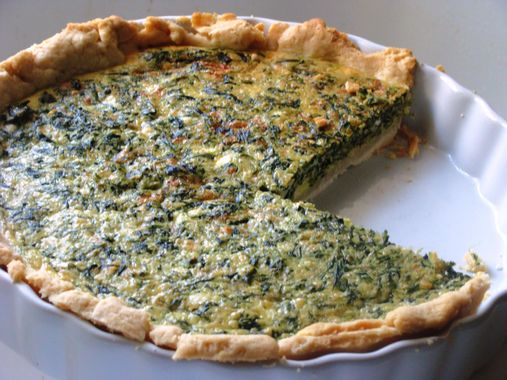

Quiche ze szpinakiem i szynką
600 g ciasta francuskiego
3 umyte jaja
2 żółtka
0,6 l śmietanki słodkiej UHT 30%
2 szczypty gałki muszkatołowej
1 ząbek czosnku, drobno posiekany
sól Deluxe
mielony biały pieprz
świeży lub mrożony szpinak (1 kg mrożonego lub 1/2 kg świeżego, po sparzeniu)
1 ser tomme du pays basque, starty na tarce o drobnych oczkach
1/2 salami z orzechami
szczypta ziół prowansalskich